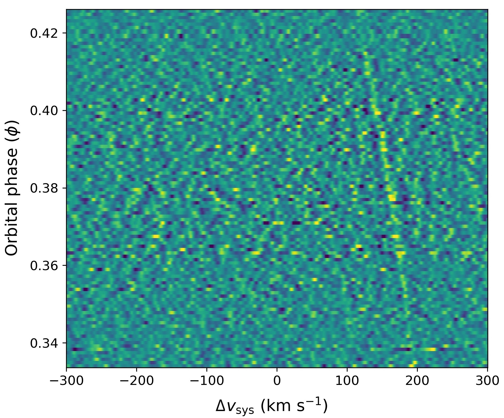
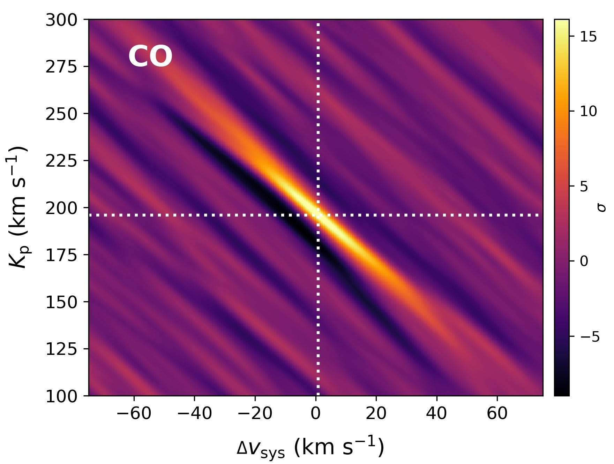
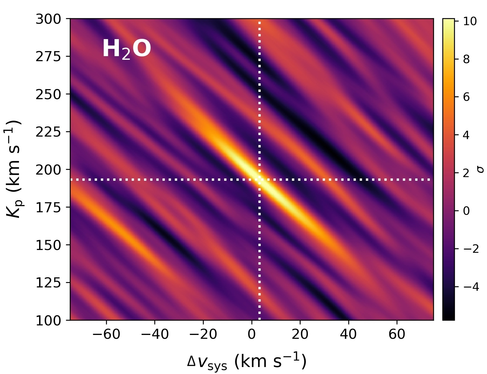
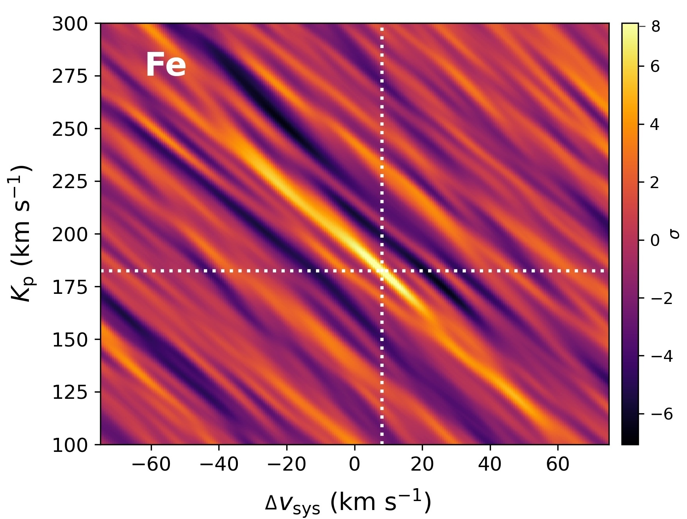
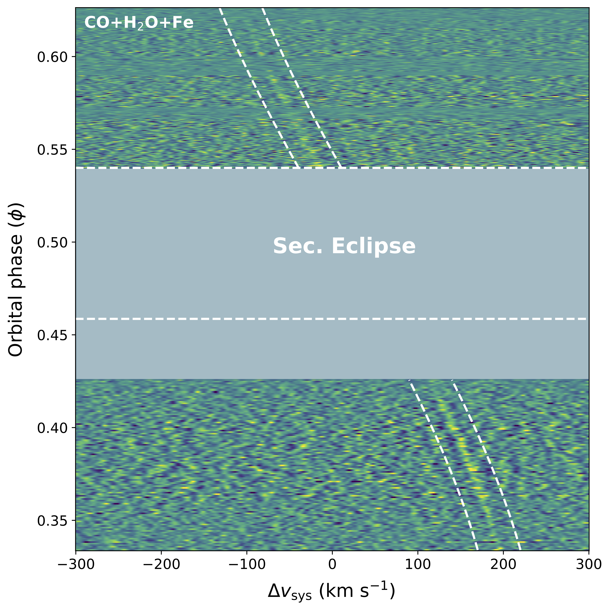
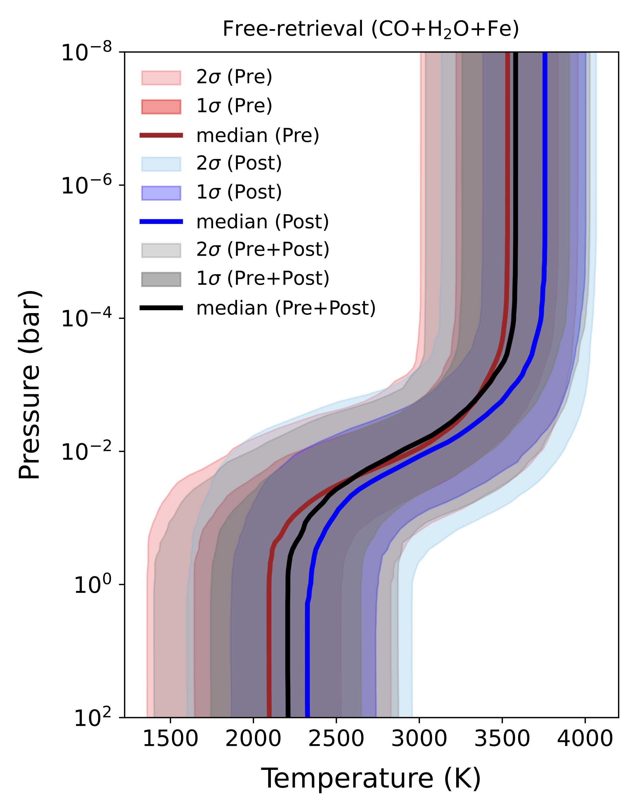
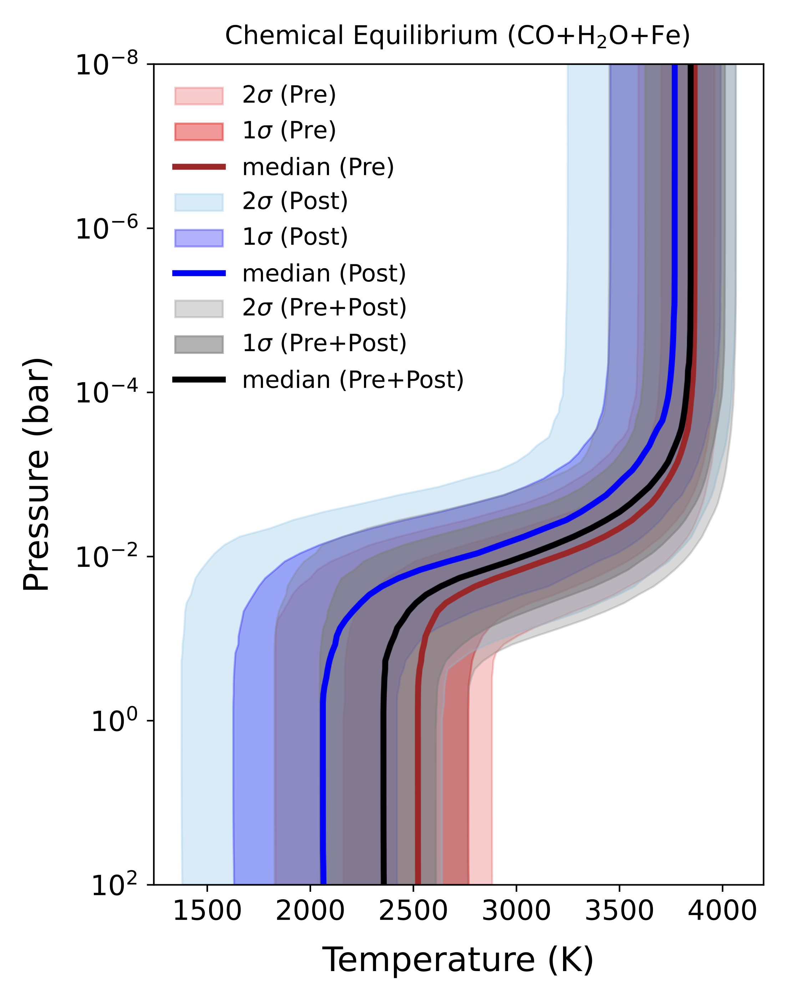

Swaetha Ramkumar
(pronounced "shh-way-tha")
PhD in Astrophysics | Trinity College Dublin
(pronounced "shh-way-tha")
PhD in Astrophysics | Trinity College Dublin
Hi, I'm Swaetha! I recently completed my PhD in Astrophysics at Trinity College Dublin,
exploring the atmospheres of planets beyond our Solar System (exoplanets) under the supervision of
Prof. Neale Gibson.
I'm originally from South India, from a beautiful state called Tamil Nadu (தமிழ்நாடு). Before starting my PhD at Trinity,
I obtained my Bachelor's degree in Physics from Amrita Vishwa Vidyapeetham, where I worked on Solar and
Interstellar plasma under the supervision of Dr. Bharat Kishore Sharma.
Following this, I obtained my Master's degree in Astrophysics from University College London (UCL), working on the non-axisymmetric bar of the Milky Way Galaxy and the Nuclear Disc
under Dr. Ralph Schoenrich.
Apart from academics, I LOVE watching anime, with Naruto being my all-time favourite.
I'm also a HUGE cricket fan, and spend most of my free time reading and re-reading different interpretations of the Mahabharata.
All in all, you'll usually find me nestled comfortably in a corner, book in hand and a stash of snacks within reach.

The waters of the world
occupy a moving vessel.


I study the atmospheres of exoplanets, with a particular focus on Hot and Ultra-Hot Jupiters (UHJs)—gas-giant planets orbiting extremely close to their host stars. These planets experience some of the most extreme physical conditions known, making them valuable laboratories for testing our understanding of atmospheric physics and chemistry beyond the Solar System.
My research uses ground-based high-resolution spectroscopy to probe thermal emission from UHJ atmospheres in the near-infrared, combined with atmospheric retrieval techniques to constrain temperature structures and chemical abundances. Much of my work to date has made use of observations obtained with the recently upgraded CRIRES+ spectrograph on the Very Large Telescope (VLT).
First-author publications | All publications (NASA ADS)
We analysed high-resolution near-infrared emission spectra of the UHJ MASCARA-1b, obtained with VLT/CRIRES+, using pre-eclipse observations that probe the planet’s dayside thermal emission.
These data enabled the simultaneous detection of both refractory (Fe) and volatile (CO and H2O) species.
Using Bayesian atmospheric retrieval techniques, we constrained the planet’s vertical temperature structure, chemical abundances, and carbon-to-oxygen ratio (C/O), providing the first retrieval-based characterisation of the atmosphere of MASCARA-1b.




We analysed post-eclipse, high-resolution K-band emission spectra of MASCARA-1b obtained with VLT/CRIRES+, acquired two years after earlier pre-eclipse observations. These data provide a complementary view of the planet’s dayside atmosphere and enable the first phase-resolved high-resolution emission spectroscopy study of the planet.
After confirming the presence of chemical species predicted by our atmospheric models in both the post-eclipse and combined analysis, atmospheric retrievals were used to constrain the absolute abundances, vertical temperature structure, and elemental ratios, yielding results consistent across both pre- and post-eclipse datasets and with solar C/O values.
The consistency between epochs indicates no significant temporal or spatial variability in the dayside atmosphere of MASCARA-1b over a two-year timescale.



SNIAM Building
School of Physics,
Trinity College Dublin,
College Green,
Dublin-2, Ireland
MAIL
ramkumas@tcd.ie
ORCID
0000-0003-0815-8366
LinkedIn
Swaetha Ramkumar
GitHub
Swaetha Ramkumar
CV
CV
If you have questions, want to connect or would like to collaborate, please reach out!